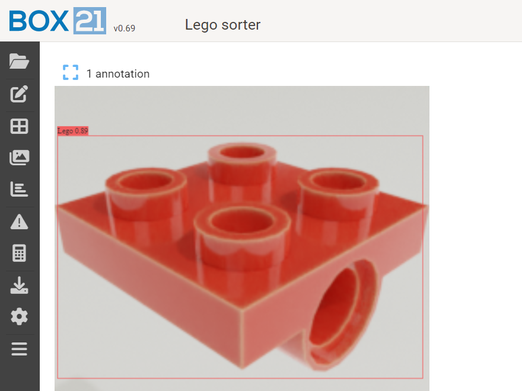
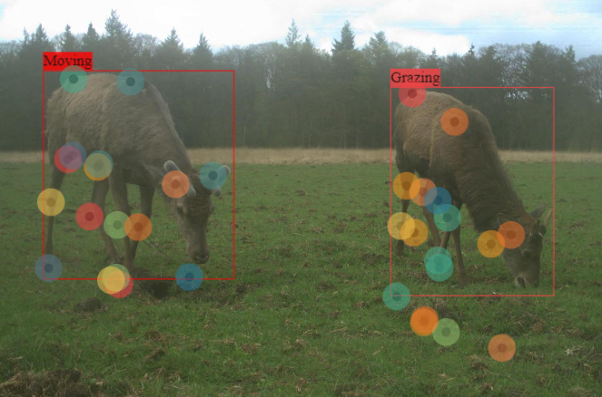
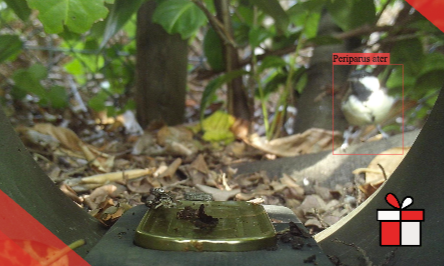

07 BOX21
AI in opkomst
leren programmeren,
en een financiele mijlpaal.
Het zal je waarschijnlijk niet ontgaan zijn dat kunstmatige intelligentie, in het Engels artificial intelligence (AI) in opkomst is. Elon Musk stuurt zijn Starlink satellieten boven Oekraïne om m.b.v. algoritmes de opmars van het Russische leger in kaart te brengen. In de landbouw experimenteert men met slimme machines die onkruid detecteren waardoor minder bestrijdingsmiddelen nodig zijn, en in de makelarij is ‘webscraping’ een opkomend fenomeen waarbij een makelaarswebsite aan advertenties komt door gewenste advertenties van andere websites af te halen. Mijn moeder wees mij op het probleem waar hoge scholen mee worstelen. Studenten die chatbots zoals ChatGTP gebruiken om met behulp van AI werkstukken automatisch te laten genereren. En zelfs bij verzorgingshuis Vilente, je zou het misschien niet zeggen, daar loopt een test met sensoren in de matrassen waarmee opvallendheden automatisch kunnen worden gedetecteerd, wat vooral voor de nachtzorg een uitkomst is. Met beperkte inzet van personeel heb je ‘zicht’ op bewoners die ‘s nachts aan de wandel gaan of die bijvoorbeeld stoppen met ademen. Daarbij natuurlijk het ethische vraagstuk: Geweldig dat het allemaal automatisch kan, maar gaat dat niet ook ten kosten van persoonlijke aandacht en intuïtie?
Al snel nadat ik de wens had laten varen om op eigen houtje een edelhert gedrag herkennings algoritme te coderen, klopte ik in december 2021 aan bij Ramon die mij aanbood gratis gebruik te maken van zijn website BOX21. Dit was een mooie wisselwerking omdat ik voorlopig niet de ingewikkelde code in hoefde te duiken en voor Ramon omdat hij er zo achter kwam welke functionaliteiten van de website al werkten en welke niet. Ik laadde 450 foto’s in met daarop edelherten uit Nationaal park de Hoge Veluwe en labelde 150 foto’s als ‘grazen’, 150 foto’s als ‘bewegen’ en 150 foto’s als ‘staan’. Een kind kan de was doen. De website was zo gebruiksvriendelijk, met één druk op de knop was daar al het model, ofwel een programmatje dat voor een nieuwe foto met 77% zekerheid kon voorspellen welk gedrag het dier liet zien. Dat gaf natuurlijk geen voldoening omdat ik ook wilde weten wat er achter de schermen was gebeurd.
Het is inmiddels januari 2023, een jaar later en pas sinds een maandje is voor het eerst het gevoel ontstaan dat ik ook zelfstandig wat taken kan programmeren. Het eerste jaar heeft de focus gelegen op het leren van de backend die we programmeren in programmeertaal Python. Dit is voor de gebruiker het onzichtbare deel van de website zoals bijvoorbeeld de database. Zo wordt de database bijvoorbeeld gebruikt zodra iemand inlogt met zijn of haar gebruikersnaam en wachtwoord, of wanneer een gebruiker objecten op een foto annoteert. Nu wordt het een beetje technisch maar via endpoints kan je een beroep doen op die gegevens in die database. Vooral in het begin kon ik er gerust een maand tijd spenderen aan het maken en testen van zo’n endpoint. Testen gebeurt in een terminal (zwart scherm) waarin de computer je een indicatie geeft over het type fout.
 Stel je codeert
- a = …
- 3+a=
- 5+a=
Niet alleen onze website BOX21 bevat AI. Bij het typen van onze codes maken we sinds kort ook zelf gebruik van AI om automatisch suggesties te laten genereren op basis van wat je hebt getypt. Het lijken misschien kleine details maar het zijn ongekende veranderingen. Ons vak gaat veranderen zegt Ramon. De verwachting is dat het erheen gaat dat wij zelf de codes niet meer hoeven te typen maar dat we beschrijven wat we willen en dat er voor ons geprogrammeerd wordt. Als programmeur hou je dan eigenlijk toezicht. En als je er niet aan uit komt vraag je het ChatGTP en helpt hij je in 9 van de 10 gevallen. GTP heeft alle kennis, hij is altijd beschikbaar en komt met een haarscherp antwoord waar je met gemak zelf een aantal uren op zou hebben moeten zoeken. Het maakt ChatGTP niet uit dat ik mijn hele script erin plak en dat mijn vraag maar over een deel ervan gaat. Een enorme verrijking in het vak waardoor mensen veel productiever kunnen zijn. Al ben ik wel blij dat ik het ben beginnen te leren toen het nog niet bestond.
Na een lange tijd van financiële malaise kwam daar in februari dan een verlossend berichtje: Jorrit ik zie dat je je stikkende best doet en dat je nog een weg te gaan hebt, maar ik wil je graag een salarisverhoging geven. Eindelijk kon de druk van de ketel. De vrees voor stel dat mijn laptop het zou gaan begeven, niet meer de noodzaak om Barcelona af te struinen voor de goedkoopste fles wasmiddel, en gewoon maandelijks een 20je lappen voor je vrienden in Nederland. Het komende jaar verwacht ik nog geen luxe vakanties maar ik kan hier mijn kamer, werkplek en een goede boodschappentas betalen en daar ben ik op dit moment hartstikke blij mee.